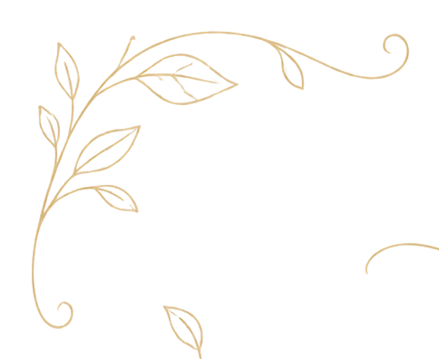
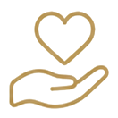
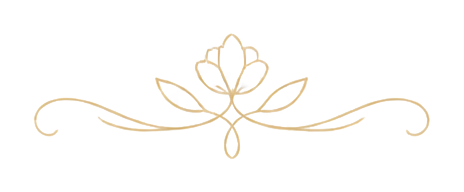
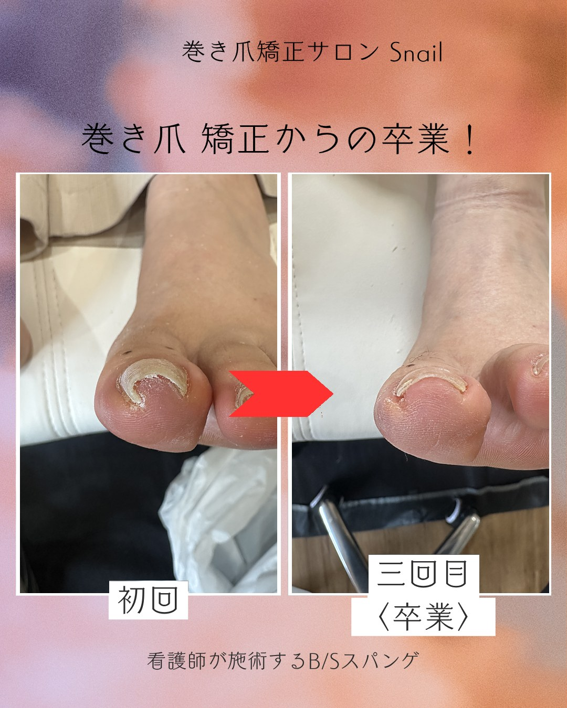
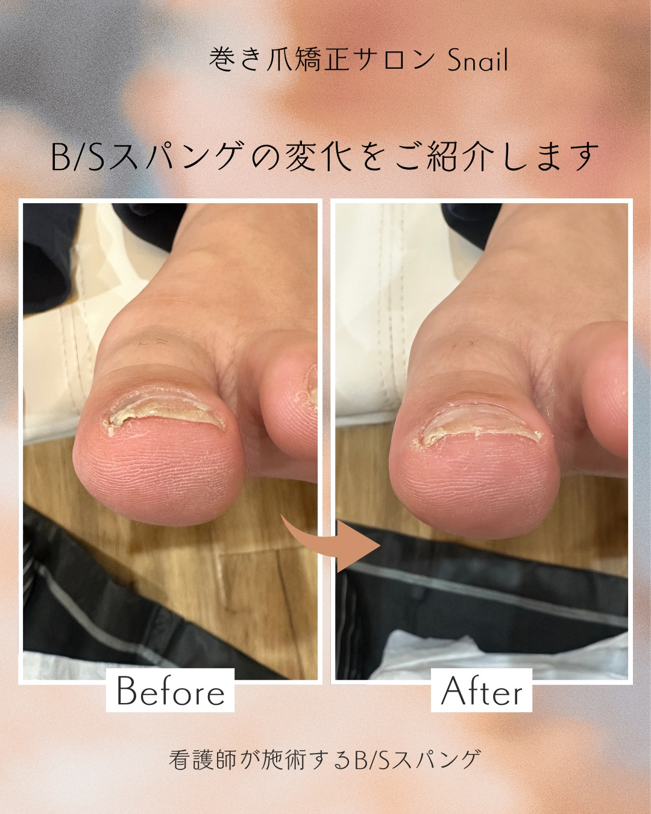
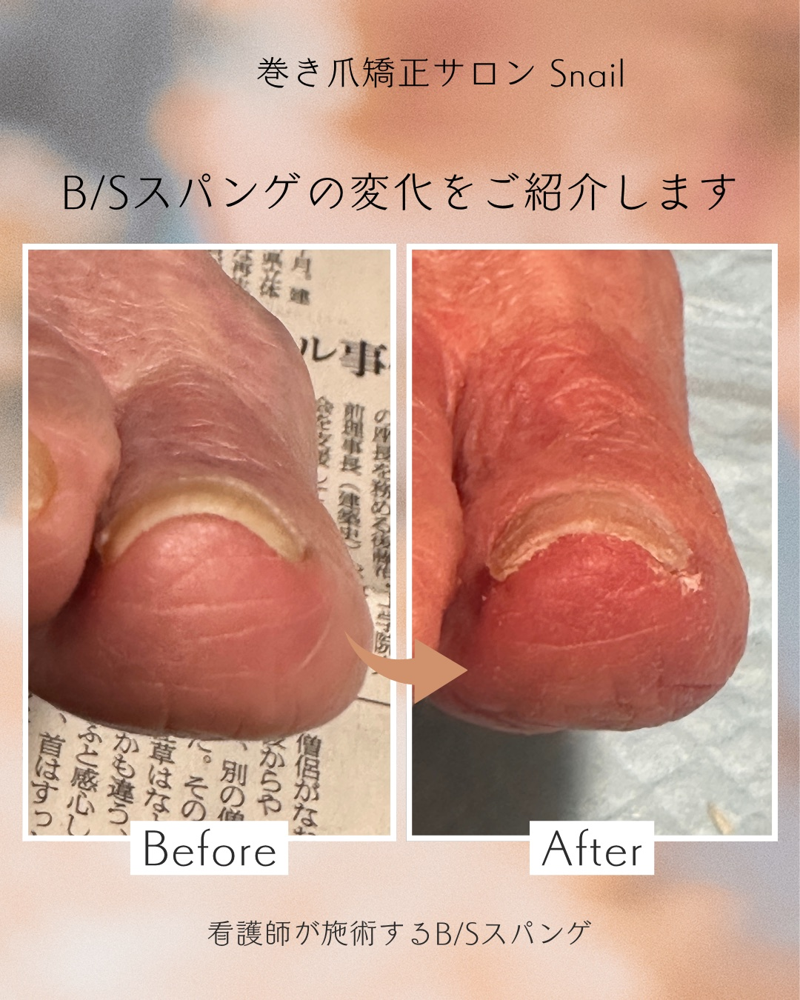
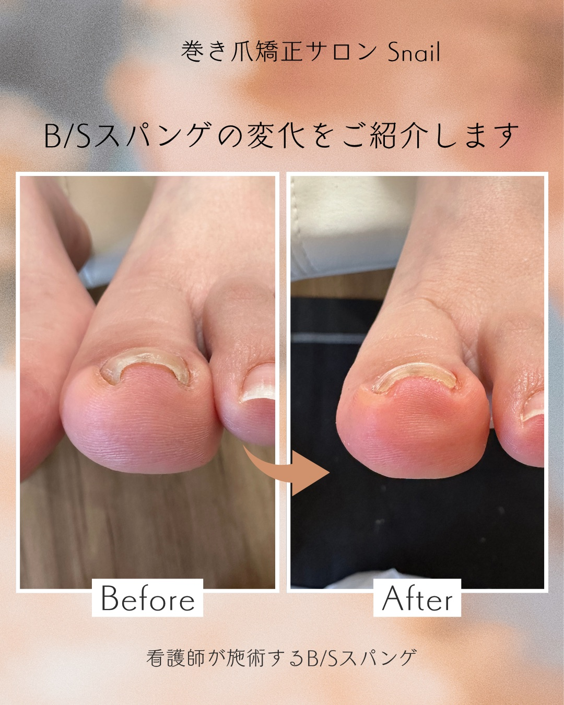
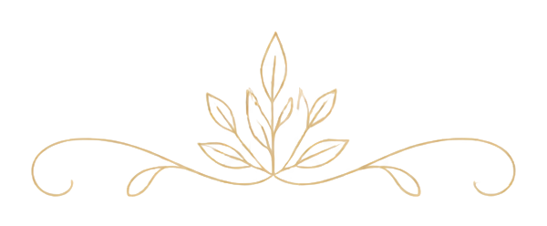

千葉県香取市・匝瑳市・銚子市・旭市｜店舗＆出張 巻き爪矯正サロン
看護師がいる安心のサロンで、痛みのない快適な毎日へ。
ご自宅・施設まで出張、切らない・痛くないB/Sスパンゲ法。
施術中はお電話に出られないことがあります。ショートメール（SMS）かLINEでご連絡いただければ、当日中にお返事します。

一つでも当てはまる方は、ぜひ一度ご相談ください。
歩くと爪が
食い込んで痛い
靴を履くと
圧迫されてつらい
見た目が気になり
サンダルを避けてしまう
繰り返す巻き爪を
なんとかしたい
安心して任せていただける体制を整えています。
スタッフ全員が看護師資格を保有。介護・医療現場で10年以上の経験があり、高齢者や持病のある方にも安心して施術を受けていただけます。
ドイツ生まれのB/Sスパンゲ法は、薄いグラスファイバー製プレートを爪に貼るだけ。メスや麻酔は不要で、施術中の痛みはほとんどありません。
香取市・匝瑳市・銚子市・旭市を中心に出張。ご自宅はもちろん介護施設へも伺います。出張費は1回¥1,000のみ。通院が難しい方も安心です。

実際の施術による、B/Sスパンゲ法での爪の変化をご紹介します。

厚く変色して食い込んでいた爪が、3回で平らな形へ。歩くときの痛みが軽くなります。

切らずに爪の形を整え、再発しにくい健康的な爪へ導きます。

巻きの強い爪も、回を重ねて段階的に矯正。歩く負担を軽減します。

食い込んでいた爪が、無理なく自然な形へ。痛みのない状態を目指します。
※ 効果には個人差があります。すべて実際の施術写真です。

看護師資格を持つ巻き爪ケアの専門スタッフが、丁寧に施術いたします。
看護師として病院・介護施設で10年以上勤務する中で、巻き爪に悩む患者さんを数多く見てきました。「痛いけれど病院に行くのが怖い」「手術はしたくない」――そんな声に応えたいとB/Sスパンゲ法を習得。切らない・痛くない施術で「歩く喜び」を取り戻すお手伝いがしたい。その想いでSnailを立ち上げました。
お客様の不安に寄り添いながら丁寧な施術を心がけています。「来てよかった」と笑顔で帰っていただけることが何よりの喜びです。
高齢者ケアの経験を活かし、ご自宅や施設への出張施術を得意としています。リラックスして受けていただけるよう穏やかな対応を大切にしています。
医療従事者としての衛生管理を徹底しています。
施術に使用する用品は使い捨てを徹底。常に清潔な状態で施術を行います。
施術中は手袋・マスクを必ず着用。感染症対策を万全に行っています。
糖尿病など基礎疾患のある方は、事前に主治医の承諾を得てから施術。医学的知識で安全を判断します。
施術前に爪と健康状態を丁寧にヒアリング。無理な施術は行いません。
ご予約から施術完了まで、4つのステップで進みます。
表示価格はすべて消費税込み。かかる費用は事前にすべてお伝えします。
| 施術内容 | 初回 | 2回目以降 | 目安時間 |
|---|---|---|---|
| 巻き爪矯正（1本） | ¥8,000 | ¥7,000 | 約60分前後 |
| 巻き爪矯正（2本） | ¥14,000 | ¥12,000 | 約60分前後 |
| 3本目以降（1本につき） | +¥3,000 | +¥3,000 | ― |
| プレート外し＋全爪メンテナンス | ― | ¥4,000 | 約30分 |
| 業界相場 | Snail | |
|---|---|---|
| 初回1本（初診料込み） | ¥5,500〜10,200 | ¥11,000 |
| 2回目以降 1本 | ¥5,500〜7,700 | ¥7,000 |
| 出張費 | ¥3,300〜（別途） | ¥1,000 |
| 施術者 | 民間資格のみが多い | 全員 看護師免許 |
※ 業界相場は全国の巻き爪矯正院（B/Sスパンゲ法）の公開料金を元に算出。出張対応のサロン自体が希少です。
施術を受けられた方のリアルな体験談をご紹介します。
「10年以上巻き爪に悩んでいました。病院では“手術で爪を剥がすしかない”と言われ怖くて放置していたんです。Snailさんのスパンゲ法は本当に痛くなくてびっくり。糖尿病の持病がある私でも、看護師さんなので安心してお任せできました。3回目で爪の形がかなり変わり、今では痛みなく歩けています。」
「82歳の母が両足の巻き爪で歩くのを嫌がり、家に引きこもりがちでした。病院へ連れていくのも車椅子で一苦労。Snailさんは自宅まで来てくださるので、母にも私にも負担がありません。施術中も穏やかにお話してくださって、今では庭に出て歩くようになりました。」
「仕事柄ずっと安全靴を履いていて、親指の巻き爪がひどくなりました。爪が肉に食い込んで毎日ズキズキ。整形外科で手術を勧められましたが仕事は休めません。プレートを貼るだけで痛みもゼロ。4回通った今、爪が明らかに平らになり、安全靴を履いても痛くなくなりました。」
「数年来の巻き爪で、親指が腫れて膿んでしまうこともありました。近くに通えるサロンがなく諦めていたところ、自宅まで来ていただけると知りお願いしました。回を重ねるごとに食い込みがやわらぎ、5回目でほぼまっすぐに。先日「卒業ですね」と言っていただけて、本当に嬉しかったです。」
「介護施設に入居している父の巻き爪を、施設まで来て施術してくださいました。外出が難しいのですが、ベッドの上で丁寧に対応していただき安心です。看護師さんなので持病のことも相談でき心強く、施設のスタッフからも『助かる』と好評でした。」
「パンプスを履く機会が多く、両足の巻き爪に長年悩んでいました。手術は跡が残りそうで怖く、ずっと我慢。プレートを貼るだけで見た目もほとんど変わらず、仕事にも支障ありませんでした。4回ほどで卒業でき、今は好きな靴を気にせず履けています。」
※ 個人の感想であり、効果を保証するものではありません。
B/Sスパンゲ法は爪の表面にプレートを貼る施術です。爪を切ったり削ったりしないため、施術中の痛みはほとんどありません。「こんなに痛くないんだ」と驚かれる方がほとんどです。
個人差がありますが、多くの方は3〜6回の施術（約3〜6ヶ月）で改善を実感されます。初回のカウンセリングで、おおよその回数をお伝えします。
基本エリア外でもご相談に応じます。まずはお気軽にお問い合わせください。
もちろんです。スタッフは全員看護師資格を持ち、介護・医療現場で10年以上の経験があります。車椅子の方やベッド上での施術にも対応しています。
はい、日常生活にほぼ支障はありません。入浴や軽い運動も問題なく行えます。靴下やストッキングも通常通りお使いいただけます。
申し訳ございませんが、B/Sスパンゲ法は保険適用外の自費施術です。表示価格はすべて消費税込みで、ご自宅・介護施設への出張は1回¥1,000のみ。それ以外の追加料金はありません。
出張対応に加え、店舗での施術も承っております。
シェアサロン Moriyama 内
〒287-0003 千葉県香取市川頭204-1
お電話 090-4418-0494
施術中はお電話に出られないことがあります。ショートメール（SMS）かLINEでご連絡いただければ、当日中にお返事します。
Google Maps で見る →ご自宅・介護施設への出張施術に対応しています。
ご利用の多い重点エリア
その他の出張対応エリア
※ 上記エリア外もご相談に応じます。お気軽にお問い合わせください。